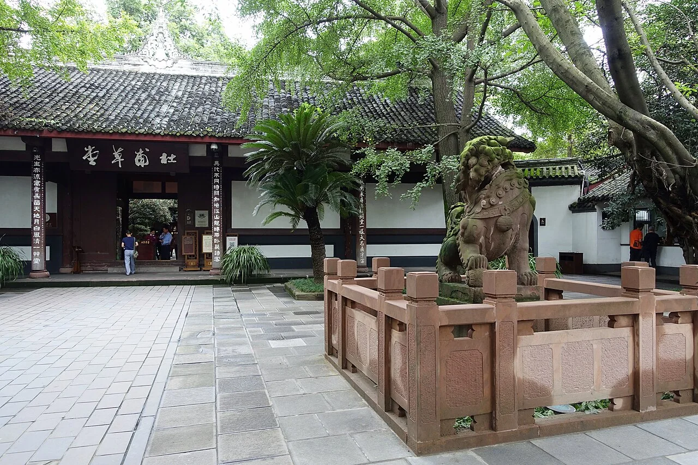

ทริปนี้ไปเมืองไหนกัน?
เลือก Mood
เลือกฟีลที่อยากเที่ยว แล้วสถานที่ในแผนจะเปลี่ยนตาม
ย่านพักที่ใช้เป็นฐาน
ตามเมือง
สวนจีน & งานศิลป์
วันสบาย ๆ เดินสวน นั่งชา และค่อย ๆ มองเมือง
ระยะเป็นเส้นตรงโดยประมาณจาก OpenStreetMap; จุดที่พักอ้างอิง IFS ใกล้ Chunxi Road ระยะเดิน/รถจริงจะเปลี่ยนตามโรงแรมที่เลือก
คืนนี้ไปต่อแบบไหนดี
จุดเด่นตาม moodเครดิตภาพและแหล่งข้อมูล
สรุปเมืองและวันที่อิงจาก Excel; วันที่ 7 ธ.ค. มี Route แบบละเอียดที่ปรับจุดแวะตาม mood และโซนฮิต จุดที่เพิ่มหรือสลับลำดับเป็นข้อเสนอของไกด์ ภาพถ่ายต่างวันและมีการย่อ/ครอปเพื่อแสดงบนมือถือ
ภาพเมืองบนหน้าเลือก: ChasingAir (CC0, สถานี Chengdu East), Lzylove (CC BY-SA 4.0, ย่อภาพ), Lianguanlun (CC BY 4.0, ย่อภาพ). ภาพ mood ซีหลิง: 书剑飘零 (CC BY-SA 4.0), landagent (CC BY-SA 3.0). ภาพ mood ฉงชิ่ง: Chen Hualin (CC BY-SA 4.0), Willi Weasel (CC BY-SA 4.0), Eng.Justus Byebirooha (CC BY-SA 3.0). ภาพอื่นจาก Wikimedia Commons: MspreilsCN (CC BY 4.0), Person-with-No Name (CC BY 4.0), <a href="//commons.wikimedia.org/wiki/User:Zairon" title="User:Zairon">Zairon</a> (CC BY-SA 4.0), <a href="//commons.wikimedia.org/wiki/User:Daderot" title="User:Daderot">Daderot</a> (CC0), Jimmyshjj (CC BY-SA 4.0), User:Gisling (CC BY 2.5), Daderot (CC0), Alpha from Melbourne, Australia (CC BY-SA 2.0), TFUshkjasjk (CC BY-SA 4.0), EditQ (CC0), 来斤小仓鼠吧 (CC BY-SA 4.0), Travel Coffee Book (CC0), Charles Haynes (CC BY-SA 2.0), Jimmyshjj (CC BY-SA 4.0), Daderot (CC0), Daderot (CC0), Yumeto (CC BY-SA 4.0), David Xuang (CC BY-SA 4.0), Limesave (CC BY-SA 4.0), Daderot (CC0), Zairon (CC BY-SA 4.0), Suicasmo (CC0), Daderot (CC0), Alpha from Melbourne, Australia (CC BY-SA 2.0), EditQ (CC0), AlexHe34 (CC BY-SA 3.0)
แนวจัดโซนและจุดเที่ยวกลางคืน: GoChengdu ย่านพัก, GoChengdu เที่ยวกลางคืน, China National Tourist Office. ระยะทาง: OpenStreetMap contributors (ODbL).
ฐานพักและการต่อรถหลังซีหลิง: เว็บทางการซีหลิง · การเดินทาง, เว็บทางการซีหลิง · ที่พัก, สถานีสาย 2 เฉิงตู, Trip.com · Yupu, Trip.com · Haoke, Trip.com · K·K, Trip.com · Yangguang. เวลาเดิน ราคาห้อง และรอบรถอาจเปลี่ยน ต้องตรวจอีกครั้งก่อนจอง